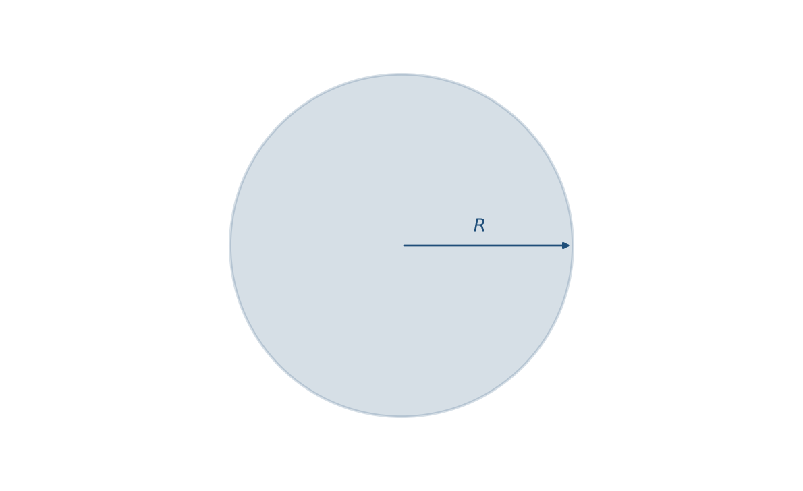
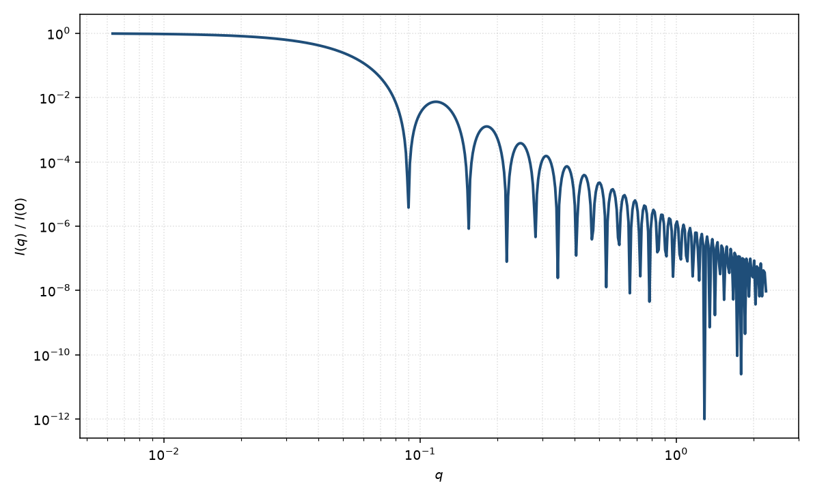

均匀球
sphere
适用场景
当粒子可视为各向同性、内部散射长度密度近似均匀的球体时，均匀球形式因子是最直接的解析模型。典型对象包括：稀释胶乳与无机纳米颗粒、近似球形的乳液滴、胶束疏水核的粗描述，以及许多可用等效球半径概括的胶体。
适用的经验判据：$p(r)$ 单峰且较对称；低 $q$ 的 Guinier 区给出与几何半径自洽的回转半径；$\log I$–$\log q$ 上可见与半径相关的振荡极小，高 $q$ 趋近 Porod $q^{-4}$。明显长径比、空心壳层或径向分层时，应改用核壳、囊泡或模糊球，而不是给均匀球强加额外参数。
稀溶液、相互作用可忽略时只拟合 $P(q)$。体积分数升高、低 $q$ 被压低或出现相关峰时，应另加结构因子，不要把 $S(q)$ 误读成半径变化。
物理图像
均匀球的散射振幅是球体积内平面波相位的积分。Rayleigh 给出归一化振幅 $\Phi(x)=3(\sin x-x\cos x)/x^3$，强度 $P(q)=|\Phi(qR)|^2$，并约定 $P(0)=1$。第一极小约在 $qR\approx 4.49$；低 $q$ 回到 Guinier，$R_g=R\sqrt{3/5}$。
绝对强度还含数密度、衬度平方与体积平方。拟合中常把它们收进无量纲标度因子，本底吸收溶剂与仪器的常数项。球的取向平均是平凡的：取向对 $I(q)$ 无影响。
示意图


核心公式
出发点
稀释、取向无规的均匀粒子，相干散射振幅是衬度对平面波相位的体积分
$$F(\mathbf{q})=\int_V \Delta\rho(\mathbf{r})\,\mathrm{e}^{i\mathbf{q}\cdot\mathbf{r}}\,\mathrm{d}^3r.$$均匀球内 $\Delta\rho$ 为常数。球对称使相位只依赖 $r=|\mathbf{r}|$ 与 $q=|\mathbf{q}|$，角积分给出球 Bessel 核 $\mathrm{sinc}(qr)=\sin(qr)/(qr)$：
$$F(q)=4\pi\Delta\rho\int_0^R r^2\,\frac{\sin(qr)}{qr}\,\mathrm{d}r.$$推导
令 $u=qr$，则 $\mathrm{d}r=\mathrm{d}u/q$，$r=u/q$，上限 $x=qR$：
$$F(q)=\frac{4\pi\Delta\rho}{q^3}\int_0^x u\sin u\,\mathrm{d}u.$$分部积分：$\int u\sin u\,\mathrm{d}u=-u\cos u+\int\cos u\,\mathrm{d}u=-u\cos u+\sin u$。于是
$$F(q)=\frac{4\pi\Delta\rho}{q^3}(\sin x-x\cos x)= \Delta\rho\,V\cdot\Phi(x),\qquad V=\frac{4\pi}{3}R^3,$$ $$\Phi(x)=\frac{3(\sin x-x\cos x)}{x^3},\qquad x=qR.$$$q\to 0$ 时 $\Phi\to 1$，故 $F(0)=\Delta\rho V$。归一化形式因子取模方
$$P(q)=\left|\frac{F(q)}{F(0)}\right|^2=\Phi(x)^2=\left[\frac{3(\sin x-x\cos x)}{x^3}\right]^2.$$稀释极限下观测强度 $I(q)=n\,|F(q)|^2+B=n(\Delta\rho)^2 V^2 P(q)+B$，拟合里常把 $n(\Delta\rho)^2 V^2$ 收成 $\mathrm{scale}$。
低 $q$ 与渐近
Taylor：$\sin x=x-x^3/6+x^5/120+\cdots$，$\cos x=1-x^2/2+x^4/24+\cdots$，代入得 $\Phi=1-x^2/10+O(x^4)$。于是
$$P(q)=1-\frac{(qR)^2}{5}+O(q^4).$$与 Guinier $P=1-q^2 R_g^2/3+\cdots$ 比较，立刻得到 $R_g^2=3R^2/5$，即 $R_g=R\sqrt{3/5}$。指数形式 $I(q)\simeq I(0)\mathrm{e}^{-q^2 R_g^2/3}$ 在 $qR_g\lesssim 1$ 可用。
$\Phi(x)=0$ 等价于 $\tan x=x$。第一正根 $x_1\approx 4.4934$，故第一极小 $q_1\approx 4.49/R$。大 $x$ 时 $\Phi\sim 3\cos x/x^2$，强度包络 $\sim q^{-4}$，即尖锐界面的 Porod 定律。
参数表
| 参数 | 符号 | 含义 | 单位 | 典型范围 |
|---|---|---|---|---|
| 半径 | $R$ | 球体几何半径 | Å 或 nm | 10–1000 Å |
| 标度 | $\mathrm{scale}$ | 数密度、体积平方与衬度平方的前置因子 | 与强度单位一致 | 由绝对标定或自由拟合 |
| 本底 | $B$ | 常数本底 | 与强度单位一致 | 仪器与溶剂相关 |
| 衬度 | $\Delta\rho$ | 粒子与溶剂的散射长度密度差 | Å$^{-2}$ 或 cm$^{-2}$ | 由组成计算或对比实验 |
拟合注意
多分散是均匀球最常见的“看起来不像球”的原因。Schulz–Zimm 或对数正态（logN）尺寸分布会把第一极小抹平，并改变振荡相位；相对宽度 $\sigma_R/\langle R\rangle\gtrsim 10\%$ 时极小即可显著变钝。报告均值时须声明是数均、体积加权还是强度加权。
取向对球无关：不必引入取向角。仪器 smearing 与多分散在数据上同为振荡变钝，须用分辨率函数或针孔/狭缝几何信息区分。磁性测量时，核磁散射长度密度与核（核散射）SLD 是不同通道：均匀磁化球的磁形式因子仍是 Rayleigh 函数，但磁半径、死层与核半径不必相同；核/壳磁 SLD 应单独给出，勿与核衬度混用。
可辨识性：仅有低 $q$ Guinier 时，$R$ 与多分散、本底强相关。要约束 $R$，需要看到至少一个形式因子极小，或有独立的电镜/水力学半径。浓体系低 $q$ 压低应归因于 $S(q)$，而不是把 $R$ 拟合得偏小。
相近模型
参考文献
- Lord Rayleigh. On the scattering of light by small particles. Philosophical Magazine, 1911.
- Guinier, A.; Fournet, G. Small-Angle Scattering of X-rays. Wiley: New York, 1955.